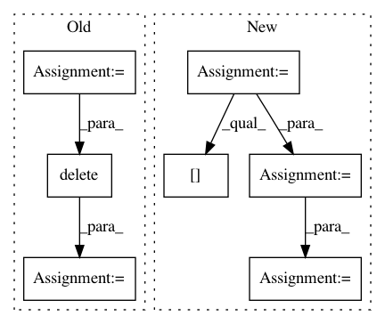

cd000fd96342d660c4f7d2d21eab9888fbab3526,deslib/util/prob_functions.py,,min_difference,#,205
Before Change
n_samples = len(idx_correct_label)
C_src = np.zeros(n_samples)
for index in range(n_samples):
supports_correct = supports[index][idx_correct_label[index]]
// removing index of the correct class
difference = supports_correct - supports[index, :]
difference = np.delete(difference, idx_correct_label[index])
C_src[index] = np.sort(difference)[0]
return C_src
After Change
n_samples = len(idx_correct_label)
// Boolean mask for the correct class
mask = np.zeros(supports.shape, dtype=np.bool)
mask[np.arange(n_samples), idx_correct_label] = True
// Get supports for the correct class
supports_correct = supports[mask]
// Get supports for the other classes
supports_others = supports[~mask]
difference = supports_correct.reshape(-1, 1) - supports_others.reshape(supports_correct.size, -1)
C_src = np.sort(difference, axis=1)[:, 0]
return C_src
def softmax(w, theta=1.0):
In pattern: SUPERPATTERN
Frequency: 3
Non-data size: 7
Instances
Project Name: scikit-learn-contrib/DESlib
Commit Name: cd000fd96342d660c4f7d2d21eab9888fbab3526
Time: 2018-04-23
Author: rafaelmenelau@gmail.com
File Name: deslib/util/prob_functions.py
Class Name:
Method Name: min_difference
Project Name: scikit-learn-contrib/DESlib
Commit Name: cd000fd96342d660c4f7d2d21eab9888fbab3526
Time: 2018-04-23
Author: rafaelmenelau@gmail.com
File Name: deslib/util/prob_functions.py
Class Name:
Method Name: min_difference
Project Name: scikit-image/scikit-image
Commit Name: f8d9a6c144ef84bad2478a4ba4eedb1c559274e0
Time: 2020-11-11
Author: rfezzani@gmail.com
File Name: skimage/_shared/coord.py
Class Name:
Method Name: ensure_spacing
Project Name: ntucllab/libact
Commit Name: e81142f0869321cd8792e13bfc4f6fb85d9f1efc
Time: 2015-12-22
Author: yangarbiter@gmail.com
File Name: libact/query_strategies/uncertainty_sampling.py
Class Name: UncertaintySampling
Method Name: make_query